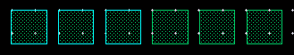
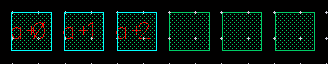

Generating Labels Using the Scan Line
By using the scan line, you can label multiple objects in one go. This method is useful if the specified pattern in the Label (Pattern) field generates multiple labels in a sequence. For example, the label GDD will label only the first object even though the scan line may intersect more objects. The scan line assigns labels to only as many objects as the number of labels generated by the specified pattern. Consider the pattern A<0:2> with the Expand option selected. Three labels are generated: A<0>, A<1>, and A<2>. If the scan line intersects five objects, only three of them are labeled.
To generate labels by using the scan line, with the middle mouse button, click and drag the pointer to draw a line scanning across the objects you want to label. Then, release the mouse button at the end point of the scan line. Labels are placed at the intersection of the scan line and the objects. You can configure the direction in which you can move the scan line by setting the Snap Mode option, which is set to orthogonal by default.
Labeling Selected Objects
In Manual mode, you can use the scan line method to label only the selected objects. You can select the objects before or after starting the Create – Label command.
In Auto mode, you can use the scan line method to label pre- or post-selected objects with connectivity information and pre- or post-selected instances.
To label selected objects using the scan line:
-
In the layout window, select the objects that you want to label.
 -
Choose Create – Label.
The Create Label form opens. - Type the label pattern in the Label (Pattern) field.
- Select the Label Selected Objects check box from the Scan Line section.
- Ensure the Auto Zoom Out check box is selected.
-
With the middle mouse button, click on the canvas and drag a scan line that intersects the selected and unselected objects.

-
Release the mouse button.
Only the selected objects are labeled.
 -
Press
Escor click Cancel in the form to finish creating labels.
Only as many labels from the specified sequence in the Label (Pattern) field are used as there are selected objects.
Labeling Objects Out of the Design Display Area
In the scan line method, since you use the middle mouse button to draw the scan line, you cannot use the mouse scroll wheel to zoom in or zoom out of the design while creating the scan line. The Tab key is also unavailable to pan through the design. Therefore, in a scenario where there is a large number of objects to be labeled, some of which are out of the current display area, ensure that the Auto Zoom Out check box in the Scan Line section of the Create Label form is selected. As you click and drag the scan line beyond one of the edges of the design display area (to allow the scan line to intersect objects currently not in view), the Auto Zoom Out option automatically zooms out the design to make visible the other objects that need to be labeled. As you continue to drag the scan line, the design keeps zooming out and panning automatically. When you release the middle mouse button to complete the scan line, the design returns to the original zoom level and labels are added to all objects that were intersected by the scan line. If you do not select this check box, no zoom out occurs, though the design pans as you drag the scan line beyond a design display area edge.
Related Topics
Configuring Label Creation Options
Return to top